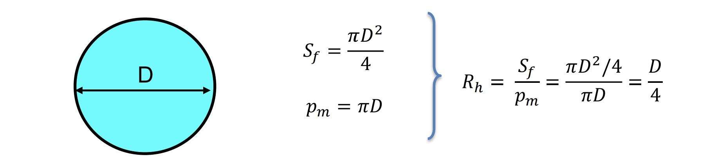

Fluidos y Neumática
Fundamentos teóricos y aplicaciones técnicas en hidráulica y automatización
- 🚰 Flujo en conductos cerrados: pérdidas de carga, caudales y eficiencia hidráulica.
- ⚖️ Hidrostática: presión en fluidos en reposo, empuje y estabilidad de cuerpos sumergidos.
- 🌊 Flujo en conductos abiertos: análisis de régimen y cálculo de secciones con fórmulas prácticas.
- 🔧 Neumática: interpretación de circuitos, componentes básicos y control secuencial.
Incluye esquemas visuales, fórmulas esenciales y documentos PDF con ejercicios resueltos para reforzar el aprendizaje.
1. Flujo en conductos cerrados
Estudia el comportamiento del fluido cuando circula por tuberías o canales cerrados. Se analizan parámetros como la velocidad, presión, pérdidas por fricción y caudales, que son esenciales para diseñar sistemas hidráulicos eficientes.
Ecuación de Bernoulli
La ecuación de Bernoulli describe la conservación de la energía mecánica de un fluido en movimiento. Relaciona la presión, la velocidad y la altura en diferentes puntos de una corriente de fluido ideal (sin viscosidad y en régimen estacionario).
Forma general:
P + ½·ρ·v² + ρ·g·h = constante
Donde:
- P: presión del fluido (Pa)
- ρ: densidad del fluido (kg/m³)
- v: velocidad del fluido (m/s)
- g: aceleración de la gravedad (9.81 m/s²)
- h: altura sobre un nivel de referencia (m)
2. Hidrostática
Se centra en los fluidos en reposo, analizando la presión ejercida por un fluido sobre las superficies, el empuje sobre cuerpos sumergidos y la estabilidad de estos. Es fundamental para entender fenómenos como el principio de Pascal y Arquímedes.
3. Flujo en conductos abiertos
Se refiere al flujo de fluidos en canales abiertos como ríos o canales de drenaje, donde la superficie del fluido está en contacto con la atmósfera. Se estudian los regímenes de flujo y el cálculo de secciones hidráulicas para asegurar un transporte eficiente.
4. Neumática
Rama que utiliza aire comprimido para realizar trabajo mecánico, control de sistemas y automatización. Incluye el estudio de componentes básicos como compresores, válvulas y cilindros, así como el diseño de circuitos neumáticos.
Aquí puedes consultar el documento con los principales símbolos neumáticos utilizados en esquemas técnicos. Basado en la documentación oficial de SMC.Símbolos Neumáticos (PDF)